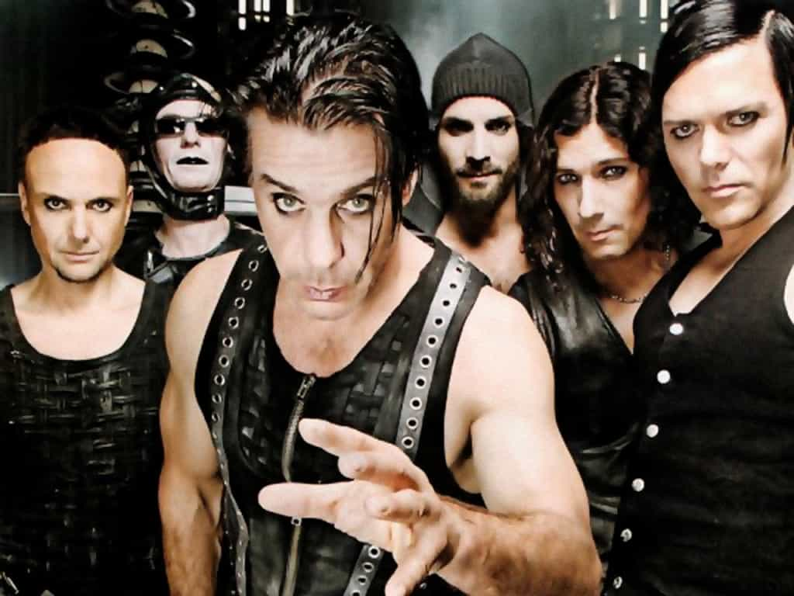

< < < Back
Rammstein Is Germany’s First Red Pill Band – Return Of Kings
If you have grown sick to death of the whiny chick music with femcentric themes that permeate Top 40 radio in America, you may be interested to know there is a an alternative if you like rock music with masculine themes. Rammstein is a popular Neue Deutsche Härte industrial rock band from Germany. Formed in 1994, they have sold 35 million records worldwide. Their award-winning concerts are renowned for their use of live pyrotechnics.

More importantly, they created a spark for red pill knowledge and promoted men’s self-interest before the film The Matrix was even released. These are some of the music videos and lyrics that echo popular sentiments in the manosphere. Their first big hit was Du Hast, released in 1997. The lyrics of the song are clearly about avoiding marriage:
You
you have
you have me
you have asked me
you have asked me and I have said nothing
Do you want, until death separates you,
to be faithful to her for all days
No!!
Do you want, until death, which would separate,
to love her, even in bad days
No!!
Watch the video:
The video has a dual meaning. Adding to the song’s theme of avoiding marriage for a life of freedom and dignity, we see a woman in a red dress speeding to a warehouse with her lover in tow. Bear in mind a woman in a red dress is often used in art to symbolize socialism, and feminism/male oppression has been packaged with socialism in the West. Her lover pulls a gun out of her handbag, ready to do her bidding. As her lover prepares to enter the warehouse, we next see men in masks, representing the elite fat cats he would be enslaved to in order to provide for this woman upon marrying her.
Once entering, the man driving the car realizes his friends are wearing the mask as a ruse, perhaps as a warning of the type of life he’ll have upon taking the vows. The men in the warehouse are screaming in the face of an unseen person, who is a symbol the of the state apparatus who subjugates men once they submit to a female and get married. After taking the masks off, the men all have one last hurrah together.
The woman, all the while, is nervous that she will not be able to subjugate him, and paces nervously outside, hoping he doesn’t uncover the ruse. The men then burn the symbolic state apparatus in the warehouse, and decide that freedom and male brotherhood is more important than becoming an indentured servant then exit the warehouse. Upon realizing that the lady in the red dress (symbolizing socialism/feminism and a wife/slaveholder) was only using him to do her bidding, he returns, friends in tow, and the car explodes, taking the woman with it, a powerful expression of a man refusing to submit to either socialism or feminist orthodoxy.
Next song is Sonne.
The theme of this video is based on the German fairy tale Snow White and her seven dwarfs. This is of course symbolic of the typical Western woman and her supplicating beta orbiters. The dwarfs are all slaving away in the diamond mine trying to find a gem that will satisfy her. We see early in the video that she readily accepts one of the dwarf’s offerings to her, but quickly slaps him down, symbolizing how women treat beta providers. All the while, she has a sadistic side, enjoying the mistreatment of her dwarfs/beta orbiters.
In this video, Snow White really takes on the princess role, and we all know most Western women see themselves as just that. Midway through, Snow White snorts some golden powder, retires to a bath, and later dies. Her death can be seen two different ways: either she dies from overindulgence in the “golden powder” made possible by her beta male slaves, or one of the dwarfs gets sick of her bullshit and poisons her. In any case, she is taken to the top of a mountain and laid to rest, only to have an apple fall into her hand at the last minute. This has the effect of giving her a second chance to the delight of her beta dwarfs, and possibly to the chagrin of the dwarf who wanted to get rid of her. Back to the diamond mine, boys.
Another video that shows how manipulative females can be is Rosenrot.
These selected lyrics tell the story:
A girl saw a little rose
It bloomed there in bright heights
She asked her sweetheart
if he could fetch it for her
She wants it and that’s fine
So it was and so it will always be
She wants it and that’s the custom
Whatever she wants she gets
At his boots, a stone breaks
He doesn’t want to be on the cliff anymore
And a scream lets everyone know
Both are falling to the ground
It’s really easy to see the theme of this video just by watching it. A girl manipulates a priest into killing for her, then she’s first in line to burn him at the stake. The lyrics to the song serve as a dire warning to men who supplicate to female desire.
Another song and video that has manosphere themes is Amerika. It’s about America pushing its empty, materialistic culture through mass media, brainwashing other cultures of the world, and turning them into mindless consumers. As the lyrics tell, “freedom” is the product that’s being marketed, but what’s really being sold to people is chains.
This is the video with English subtitles:
I hope you enjoyed this quick introduction to Rammstein. Their music is a great way to practice German, one of the major languages in the world. While Rammstein illustrates one aspect of the German language (the harsh-sounding, rough side), if you delve deeper into the language and music it can also be one of the most tender, emotive languages you’ve ever heard. It’s also enjoyable to realize that men actually have an ally amongst the world’s popular musicians.
Read more: The Most Masculine Oldies Music


{kind=link}